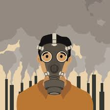
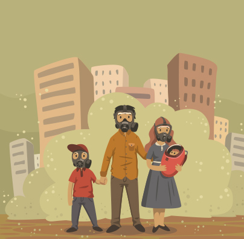
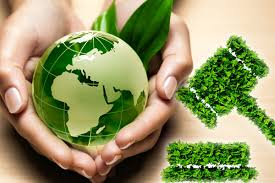

Control de la contaminacion
El termino control de contaminacion es usado en gestion ambiental. Y significa control de las emisiones y efluentes que se liberan al aire, agua y suelo.
Sin un control de contaminacion, desechos de consumo, calor, agricultura, mineria, industrias, transporte y otras actividades del hombre, degradan y degradaran el
medio ambiente. En la jerarquia de los controles, la prevencion de contaminacion y la minimizacion de residuos son preferibles que el control de contaminacion en si.
Las tecnicas y practicas utilizadas para reducir o eliminar las emisiones contaminantes dependen del agente contaminante que se quiera atacar.
La educacion desde un nivel inicial debe ser sobre la contaminacion, sus consecuencias y formas de evitarla. Ayudaria concientizar a muchas generaciones sobre los
problemas del medio ambiente, a medida que estas generaciones se vuelvan adultas provocarian mas presion sobre la proteccion al medio ambiente. Impulsando mas
controles y politicas de medioambientales.
Desarrollo sostenible
Un control definitivo a la contaminacion (que agota los recursos medioambientales) seria la adopcion de una economia de desarrollo sostenible que aseguraria que
"los recursos para satisfacer las presentes generaciones esten disponibles sin comprometer el desarrollo de las futuras generaciones". Cumpliendo con sus tres
ambitos de importancia la ecologia, la economia y la sociedad de acuerdo al Programa 21 de Naciones Unidas. El desarrollo sostenible tambien forma parte del septimo
Objetivos de Desarrollo del Milenio de Naciones Unidas, el cual busca "Garantizar el sustento del medio ambiente".

Aproximadamente desde finales de la decada de los 60, la contaminacion y el deterioro medioambiental comenzo a ser considerada como un problema politico en varios
paises industrializados. Como consecuencia de la toma de conciencia y de la preocupacion que se fue generando muchos paises fueron introduciendo una legislacion
medioambiental y sobre la decada de los 80 se crearon agencias de proteccion medioambiental en distintos paises asi como en organizaciones internacionales como la
ONU.
Ya desde los primeros planteamientos que se realizaron sobre la necesidad de una accion internacional conjunta de proteccion del medioambiente, muchos paises
subdesarrollados manifestaron su preocupacion porque las medidas de proteccion medioambiental podrian frenar el necesario crecimiento economico e industrial que
precisaba su poblacion. Se vio que la industrializacion habia resuelto las necesidades de la poblacion de los paises desarrollados y ahora estos podian permitirse
expresar su preocupacion medioambiental mientras que los subdesarrollados no podian todavia. Asi la introduccion de legislaciones de proteccion medioambiental en
algunos paises desarrollados a principios de los 70 represento una cierta ventaja para algunos paises subdesarrollados, pues las nuevas plantas industriales de
sustancias quimicas se establecieron en esos paises subdesarrollados que tenian una legislacion mas permisiva y que suponia un menor gasto en equipamiento para
controlar la contaminacion. Accidentes como el de Bhopal, en la India, donde en diciembre de 1984 murieron 18000 personas en un escape en una planta de isocianato de
metilo demostraron la necesidad de disponer de medidas anticontaminantes en todas las plantas.